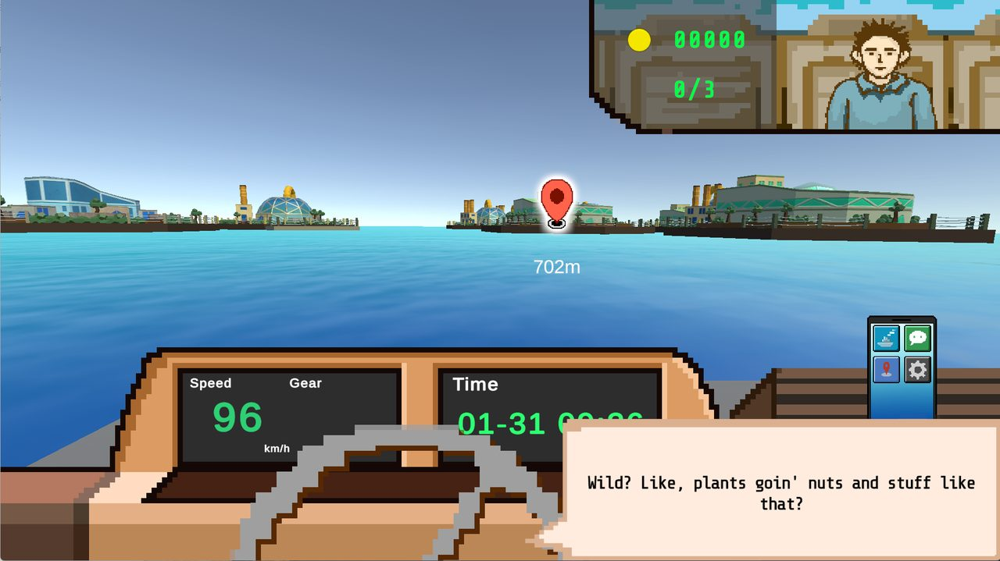

Course team project
Get to know a city at sea while driving its passengers around.

Download the demoPlayable vertical slice
Download from Baidu Netdisk (code: ctev)The course design challenge was themed "transformation". The player is a water taxi driver in a city at sea, and experiences "transformation" through character stories and city tours while driving passengers around.
Design goal: get players to pay attention to sea-level rise and learn about the city at sea as a possible solution, so that if they ever need to move to one, they won't be afraid.
Open an entry to see the problems, thinking and decisions at the time.
Starting from 5 sources: how coastal cities are responding to sea-level rise, and what that means for game design.
Read this entryA city-building concept about sea-level rise: the economic loop, policies and public opinion, disasters and endings, modeled in Machinations.
Read this entryThe city-building design was too big and didn't focus on "transformation", so we switched to a design built around narrative and city tours.
Read this entryStarting from daily life in a city at sea, designing the time, passenger, driving and phone systems.
Read this entryHex world generation, a dialogue data pipeline, and closer teamwork.
Read this entryBuilding naming conventions into the logic: an audio database, automatic voice-line grouping and decoupled events.
Read this entry